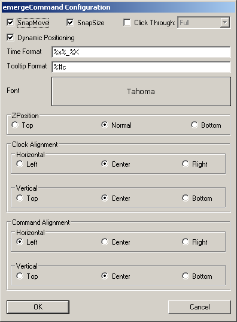

| About |
emergeCommand is a clock / command line launcher applet for Emerge Desktop. By default it displays the date and time in a configurable format. When the left mouse button is clicked on the text, it allows for the typing in of a command to execute.
| Configuration |
emergeCommand is configured by holding down 'Ctrl' while right clicking on the command window (by default appears as a grey square located on the top left corner of the screen with date and time in black). This will display the configuration menu

The About option displays the module's author and version and the current scheme's path and filename.
Load Scheme allows the user to browse and select a Scheme File.
Edit Current Scheme displays the Emerge Desktop Scheme Editor.
Reload Current Scheme allows to reload the current scheme after editing.
The Exit option closes the module. It can be restarted by running the executable file emergeCommand.exe
The Configure option displays the emergeCommand Configuration dialog box
SnapMove toggles if the window should snap to the edge of other applets or the edges of the screen when moving.
SnapSize toggles if the window should snap to the edge of other applets or the edges of the screen when sizing.
Click Through toggles if the user can click through the applets. If Click Through is activated, the user can choose between two modes: Full (the whole applet is "transparent" to mouse input) or Background (only the background area is "transparent" but the user can click on the icons in emergeTray, emergeTasks, emergeLauncher, the text in emergeCommand and the miniature windows in emergeVWM). Important notes: 1) Full Click Through works for any level of opacity, from opaque to fully transparent; 2) Background Click Through automatically sets the background to transparent but does not change the scheme, this is a known limitation; 3) To manipulate an applet set to Full Click Through the user must press the Shift key: Shift+Control+LeftClick to move the applet, Shift+Control+RightClick to get the Config menu and Shift+Alt to resize the applet.
Dynamic Positioning toggles if the window should automatically change it's position when the desktop resolution changes.
Time format allows to select the date and time format according to the options described in Time / Date Format Variables. Alternatively it can show a user defined text or nothing at all.
Tooltip format allows to select the date and time format to use for the tooltip according to the options described in Time / Date Format Variables. Alternatively it can show a user defined text or nothing at all. The tooltip is displayed when the cursor hovers over the emergeCommand window.
Font shows the Font Dialog which allows to select Font, Font style and size of the font displayed both in the command and clock windows.

ZPosition defines the relative position of the window in the Z-axis i.e. from the screen to the user and can be set to Always on Top, Always on Bottom or Normal (behaves as a regular program window)
Text alignment allows to set the alignment of the clock and command input separately. Text can be aligned in the Horizontal to the Left, Centered in the applet or to the Right. Text can be aligned in the Vertical to the Top of the applet, Center or Bottom.
emergeCommand settings are stored in HKEY_CURRENT_USER\Software\Emerge Desktop\emergeCommand and consist of the following subkeys:
| Usage |
Left clicking on the window will display a cursor which allows for the entering of a command or path. Pressing enter executes the command, or if a path is entered, an Explorer window will open on the path specified. Additionally, you can specify special folders including "My Computer", "My Documents", "My Network Places", "Control Panel" or "Recycle Bin". All Emerge Desktop's Internal Commands are also supported.
emergeCommand also allows the execution of aliases. These are simplifications of long command lines. Aliases are declared in the cmd.txt file in the files folder (see Directory Structure).
e.g. .ie c:\program files\internet explorer\iexplore.exe (please notice that the alias must be separated from the path by a Tab and not by spaces)
To execute an alias in emergecommand it must be prepended with a '.' e.g. using the previous example, typing .ie in the emerge command box will launch Internet Explorer.
The up and down arrow keys cycle through the command history. Pressing escape breaks out of the command history.
Left clicking on the edge of the window while holding down the 'Alt' key will allow for resizing the window. Simply drag the mouse, and the window will resize itself accordingly. By default, the new size of the window is stored in the Width and Height settings in the registry, so it's new size will be remembered on the next start of emergeCommand.
Holding down 'Ctrl' while left clicking allows for dragging of the window around the desktop. If the 'Ctrl' left click is allowed at that section of the applet, the cursor will change to a 'move' cursor. When the window nears the screen edge, it will snap to it, also, it will not allow itself to be dragged off screen. Similar to the resizing, by default, the new position is stored in the X and Y settings in the registry so that they will be remembered on next start.